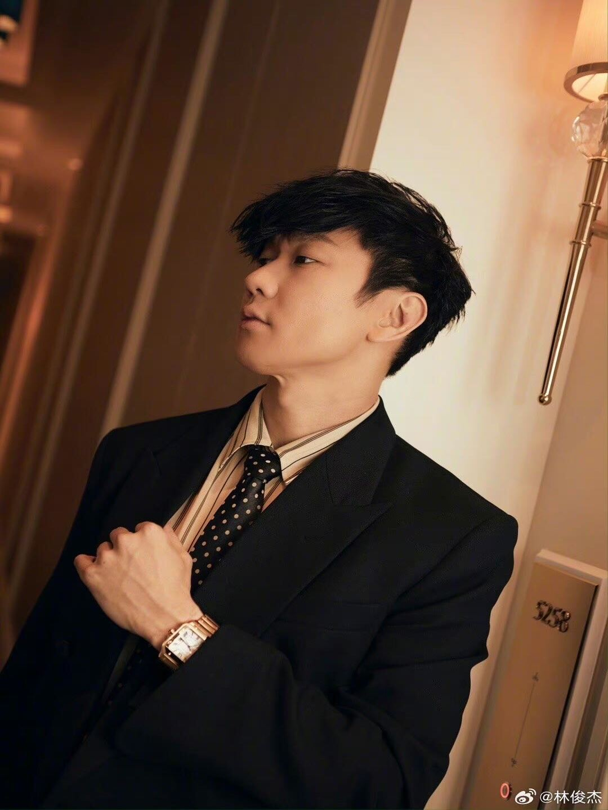
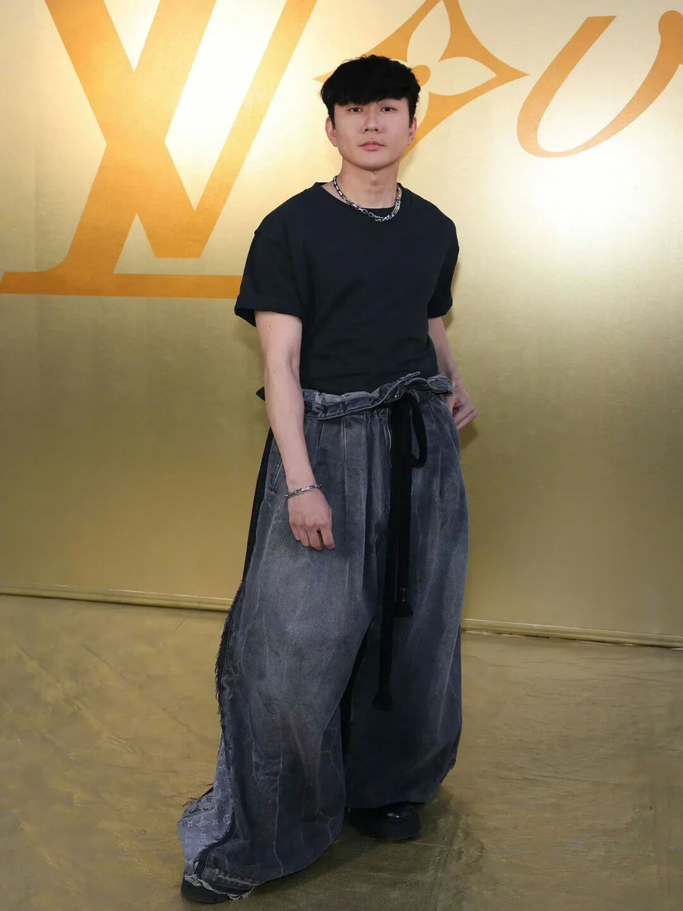
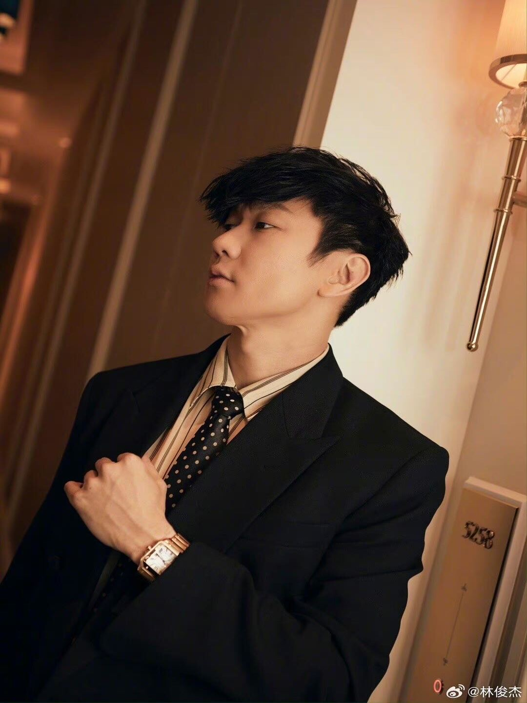
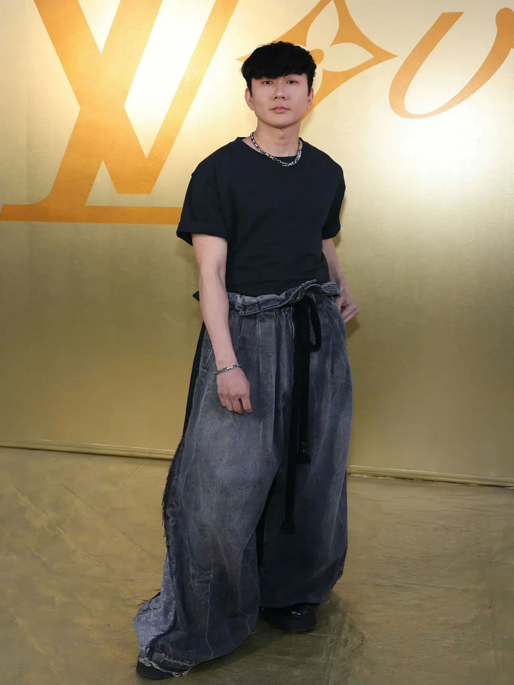
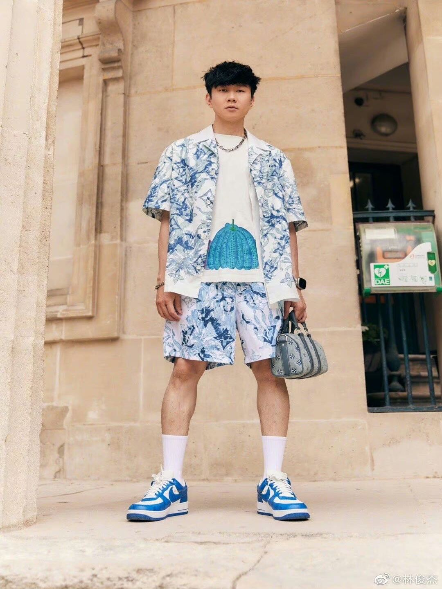
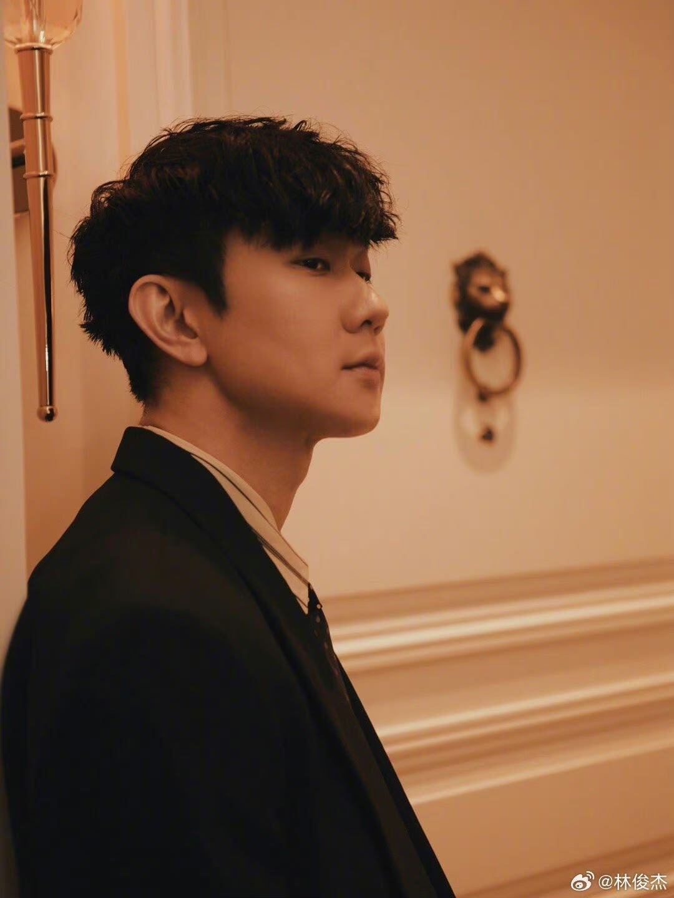

Haitian Xu
I am Haitian Xu, a diligent and ambitious pre-business freshman at the University of California, Riverside (UCR). My decision to pursue a career in the business field was spurred by my fascination with the interplay between innovation, strategy, and market dynamics. The comprehensive pre-business program at UCR is providing me a robust foundation in business principles, and I am particularly drawn towards marketing and entrepreneurship as potential specializations.
During my short tenure at UCR, I have been proactive in immersing myself in opportunities that broaden my practical understanding of business. I am an active member of the UCR Business Club where I engage with like-minded peers to discuss current market trends, share insights, and work on collaborative projects. Additionally, I have taken up a part-time internship with a local startup, where I am getting a firsthand experience in understanding the challenges and rewards of entrepreneurship. This hands-on experience is proving to be invaluable, reinforcing the theoretical knowledge I am gaining in my coursework.
Outside the classroom and professional setting, I am passionate about community service. I volunteer at local non-profits during the weekends, helping them with their accounting and financial planning. This has not only honed my financial acumen but also instilled in me a strong sense of social responsibility. I believe that business, beyond being a profit-driven venture, has the potential to make significant positive impacts in the community.
As I continue my academic journey, I am keen on taking up projects and internships that will challenge me and foster my growth in the business domain. Networking with industry professionals, attending workshops, and engaging in meaningful discussions are avenues I am exploring to ensure a holistic development. I am enthusiastic about the journey ahead, fully aware of the challenges, yet excited about the learning and impact I can make in the business landscape. Moreover, I aim to leverage my education and experiences to contribute significantly to my future endeavors and the broader business community.
Experience
Experience
Intern
• Assisted in market analysis and research
• Supported the development of marketing strategies
• Engaged in brainstorming sessions for product improvement
Member
• Participated in discussions on current market trends
• Worked on collaborative projects to gain practical business insights
• Networked with industry professionals during events
Volunteer
• Assisted in accounting and financial planning
• Organized fundraising events to support community projects
• Developed promotional materials to raise awareness about the organization's mission
Teaching Assistant
• Ran sessions to help students learn how to code
• Reviewed and graded student coding projects
• Created educational content to help promote student education
• TA'd for over 400 students each academic quarter
Education
University of California, Riverside
Portfolio
 


 